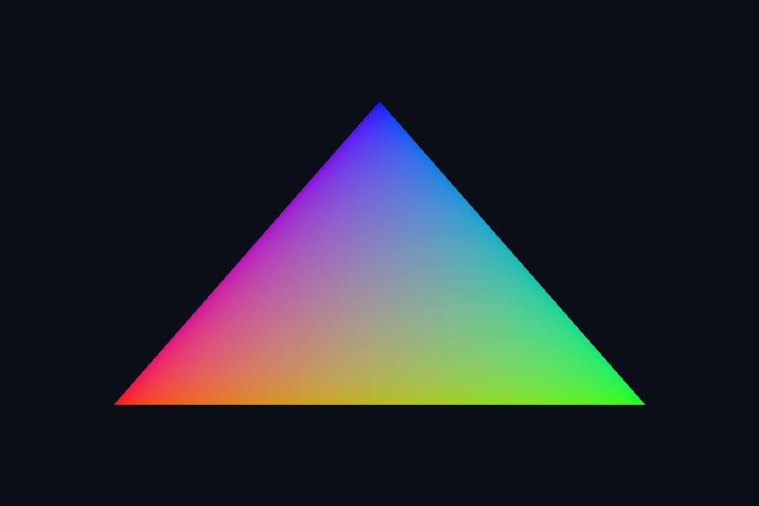

vk03_triangle · 动态渲染与第一个三角形
路线首页 · 上一课 · 下一课
构建和运行
从仓库根目录执行，完成配置后后续只需 build：
cmake --preset vulkan-native
cmake --build --preset vulkan-native-debug --target vk03_triangle --parallel 4
.\Vulkan\native\build\bin\Debug\vk03_triangle.exe
也可以通过根目录“开始学习.cmd”打开页面后点击“运行本课”。01/08 是控制台计算/设备检查示例，点击后可用“查看运行输出”阅读结果。其余示例 Esc 退出，拖动窗口可测试尺寸重建。
预期结果：红绿蓝渐变三角形。
先读哪些代码
scene_vk.hpp 的 shaderModule/SceneVk pipeline → triangle.vert → nativeMain rendering attachments。
本目录 main.cpp 选择本课的执行路径。完整 API 实现在 common/native_app.hpp 与 ../common/scene_vk.hpp（相对路线根目录），数学和网格在仓库 shared/scene.hpp。每课都是独立程序；共享代码避免把相同资源生命周期错误复制十遍，也会为后续课预先初始化部分公共状态。首次阅读只沿本课列出的调用路径展开。
原理和实现
Vulkan 不会根据当前着色器自动推断完整绘制状态。图形 pipeline 组合 shader、图元拓扑、光栅化、深度与混合状态；pipeline layout 描述 shader 可访问的资源接口。动态渲染通过 VkRenderingInfo 绑定颜色/深度附件，不再预创建传统 VkRenderPass，但附件格式仍须与 pipeline 声明一致。本课三角形位置由 gl_VertexIndex 生成，使用单独的无顶点输入 VS，避免声明了属性却未提供绑定。
修改练习
修改 triangle.vert 的颜色和坐标，重建着色器后运行；临时改变拓扑并解释结果。
修改 shader 后重新构建，再运行。Vulkan GLSL 会被编译并复制到 exe 旁的 shaders；DX12 的 HLSL 副本也随构建更新，运行时再编译。应修改源目录而不是运行副本。
自测
动态渲染是否可以省略图像布局转换？
参考：不可以，它简化 RenderPass/Framebuffer 对象，不替应用管理资源状态或内存依赖。
验证和调试
运行 vk03_triangle.exe --smoke 执行四帧（或设备/计算检查）并退出；颜色课会从 GPU 读回 PPM，计算课验证 256 个数。参见仓库 调试指南。这些基础例子按帧串行等待，重点是可追踪的生命周期；多帧重叠不能仅删除 wait，需要同时改成帧资源环。
实测画面
固定时间的 GPU 读回图像（nvpro 为 headless Viewport 输出）。

深入学习：数据、接口与执行
triangle.vert 用 gl_VertexIndex 生成位置与颜色，管线不要求 VBO。pipeline 声明颜色/深度格式，实际附件由 dynamic rendering 指定；省掉 render pass 不等于省掉兼容性。
配套精讲：三 API 对照 · 三角形、管线与着色器。先读概念与参数选择，再返回本课实现核对，不必一次展开所有公共类。
本课的真实源码切片
来自 Vulkan/common/scene_vk.hpp，第 391—420 行；这是现有实现的局部摘录，末尾可能处于函数中间，不是可单独编译的完整程序。
VkGraphicsPipelineCreateInfo gp{VK_STRUCTURE_TYPE_GRAPHICS_PIPELINE_CREATE_INFO};
gp.pNext = &rendering;
gp.stageCount = 2;
gp.pStages = stages;
gp.pVertexInputState = &vi;
gp.pInputAssemblyState = &ia;
gp.pViewportState = &viewport;
gp.pRasterizationState = &raster;
gp.pMultisampleState = &ms;
gp.pDepthStencilState = &depth;
gp.pColorBlendState = &blend;
gp.pDynamicState = &dynamic;
gp.layout = pipelineLayout;
VkResult result = vkCreateGraphicsPipelines(c.device, cache, 1, &gp, nullptr, &pipeline);
vkDestroyShaderModule(c.device, vs, nullptr);
vkDestroyShaderModule(c.device, ps, nullptr);
vkCheck(result, "Graphics pipeline");
}
// 这里只录制绘制指令；外层调用者负责开始/结束渲染、附件布局和提交同步。
void render(VkCommandBuffer cmd, VkExtent2D size, float time, float roughnessScale = 1) {
auto f = overrideFrame.value_or(frame(mode, float(size.width) / size.height, true));
if (frameProvider)
f = frameProvider(float(size.width) / size.height, time, true);
uniform.upload(&f, sizeof(f));
VkViewport viewport{
0, 0, float(size.width) / (halfViewport ? 2 : 1), float(size.height), 0, 1};
VkRect2D scissor{{0, 0}, size};
if (halfScissor)
scissor.extent.width /= 2;
同主题跨 API 导航
以下是同主题参考；场景、功能完成度和版本基线可能不同，具体边界见对照章节。
先预测，再验证
固定片元输出正常，但原色异常，先检查哪段？
参考推导：检查顶点输出与片元输入位置、插值和实际 shader 副本；目标链路已经有证据可用。
在一次实验中只改一个因素，记录预测、实际画面/日志和原因。检查已有 smoke 是否仍通过；图形调试器里再核对本次 draw 的实际输入/输出，不能仅凭进程正常退出下结论。